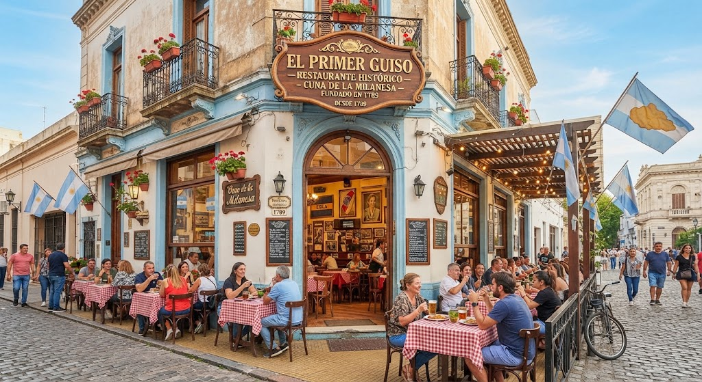

Le gran restauran de la milanesi

La estrella gastronomica de la isla. Decir que su especialidad son las milanesas es quedarce corto. La cantidad alucinante de variantes la hace destacar. Desde las clasicas milanesas de carne o napolitanas, hasta autenticas nobedades como las milanesas relenas de maicena y dulce de leche. Si quieres una experiencia única e irrepetible, además de una comida deliciosa, este es tu lugar.